はじめに
ポイントの仕組み
このアプリのポイント（🪶）には3つの数字があります。
| 種類 | 意味 | 増減のタイミング |
|---|
| 保有ポイント |
いま使える残高。ショップ購入やマッチのエントリー費はここから支払う |
来店・マッチ褒章・精算で増加／エントリー・購入で減少 |
| 累計ポイント |
これまでの獲得実績。累計ランキングの順位に使われる |
獲得で増加（マッチのエントリー費でも増減する） |
| 年間ポイント |
今年の獲得実績。年間ランキングの順位に使われる |
累計と同様。年度末の「年間リセット」で0に戻る |
ポイントが増減する主な経路は次の5つで、すべて履歴（ポイントログ）に記録されます。
- 来店 — 管理者が会員証QRをスキャンすると付与（イベントごとに設定した点数）
- マッチ — エントリー費の支払い、精算時の褒章・キャッシュバック
- トーナメント — 大会結果の一括付与
- ショップ — アイテム・特典の購入で消費
- 手動調整 — 管理者による加減算（理由の記録が必須）
運営ルール
ポイント残高がマイナスになる操作はできません。エントリーや購入の前にアプリが残高を自動チェックします。
PART A
管理者編
会の開催・ポイント運用・メンバー管理など、運営側の操作をまとめています。
管理 A-1
管理画面へのアクセス
管理機能は管理者ロールを持つアカウントだけが使えます。
- 管理者アカウントでログインし、URLの末尾に
/admin を付けてアクセスする
例: https://（アプリのURL）/admin。ブックマーク推奨です。
- 管理ダッシュボードが開く。上部に「承認待ち」「開催中マッチ」の件数、その下に各管理メニューが並ぶ
- 作業が終わったら最下部の 一般画面へ戻る で通常画面に戻れる
図 1
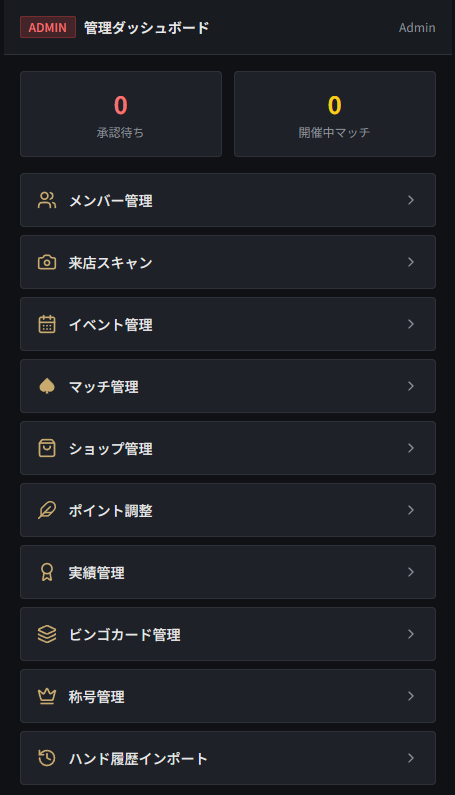
管理ダッシュボード
/admin
| メニュー | 用途 | 本書の章 |
|---|
| メンバー管理 | 入会承認・権限変更・退会処理 | A-2 |
| 来店スキャン | 会員証QRを読んで来店ポイント付与 | A-4 |
| イベント管理 | 会（イベント）の作成・開始・終了 | A-3 |
| マッチ管理 | トーナメント・リングの作成と精算 | A-5 |
| ショップ管理 | アイテム登録・特典の付与と消し込み | A-7 |
| ポイント調整 | 手動加減算・年間ランキングリセット | A-6 |
| 実績管理／ビンゴカード管理／称号管理／ハンド履歴インポート | 付加機能の運用 | A-8 |
管理者を増やしたいとき
既存の管理者が「メンバー管理」から 管理者昇格 を押すだけです（A-2参照）。一番最初の管理者だけは Firebase Console で users/{uid} の role を "admin" に直接書き換えて設定します。
管理 A-2
新メンバーの承認・権限管理
新規登録者は「承認待ち」状態で止まっており、管理者が承認するまでアプリを使えません。
メンバーがGoogleログイン＋プロフィール登録
→
承認待ち
→
管理者が承認
→
利用開始
承認のしかた
- ダッシュボードの メンバー管理 を開く
承認待ちがいる場合はメニューに赤いバッジ（人数）が出ます。
- 「承認待ち」タブに新規登録者が表示される。プレイヤー名を確認する
- 承認 を押すと即時に有効化され、本人がアプリを使えるようになる。身に覚えのない登録は 拒否
図 2
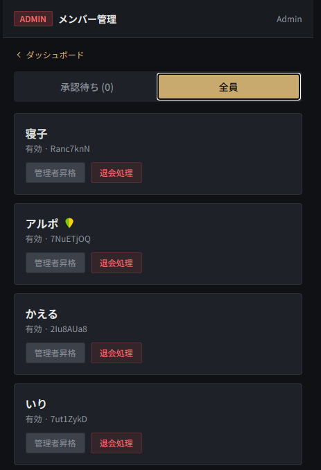
メンバー管理（承認待ちタブ）
/admin/members
権限変更・退会処理
「全員」タブに切り替えると有効メンバー全員が表示され、各メンバーに対して次の操作ができます。
- 管理者昇格 ／ 権限降格 — 管理者ロールの付け外し
- 退会処理 — アカウントを無効化する。本人は即ログアウト扱いになる
注意
退会処理に確認ダイアログはありません。押し間違いに注意してください。自分自身への操作ボタンは表示されません。
管理 A-3
イベント（会）の立て方と当日の流れ
「イベント」は開催日単位の会そのものです。来店ポイントの付与やマッチの紐付けは、すべてイベントを軸に動きます。
① イベント作成→
② 開催開始→
③ 来店スキャン→
④ マッチ運営→
⑤ イベント終了
① イベントを作成する（開催前・いつでも）
- イベント管理 → ＋ 新規イベント作成 を押す
- フォームに入力する
イベント名（例: 7月例会）／開催日／来店ポイント付与数（既定 200。QRスキャン1回で付与される点数）／配布するビンゴカード（任意。設定すると来店スキャン時に自動配布）
- 作成する を押す。一覧に 予定 ステータスで追加される
図 3
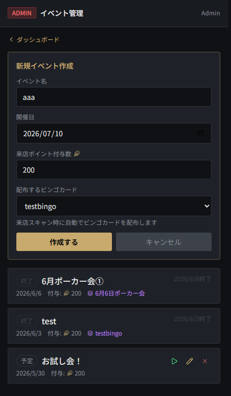
イベント作成フォーム
/admin/events
② 当日、イベントを「開催開始」する
- イベント一覧で対象イベントの ▶（開催開始）ボタン を押す
- ステータスが 開催中 に変わる
注意点
マッチ作成画面の「イベント紐付け」プルダウンには「開催中」のイベントしか表示されません。マッチを立てる前にイベントを開催開始してください。
⑤ 会の終わりに「終了」する
- 開催中イベントの 終了 ボタンを押す
- 確認モーダルの内容を確認して 終了する
終了処理では ①参加者の成績サマリー生成 ②未終了ビンゴカードの強制終了 ③参加者への通知送信 が自動で行われます。
図 4
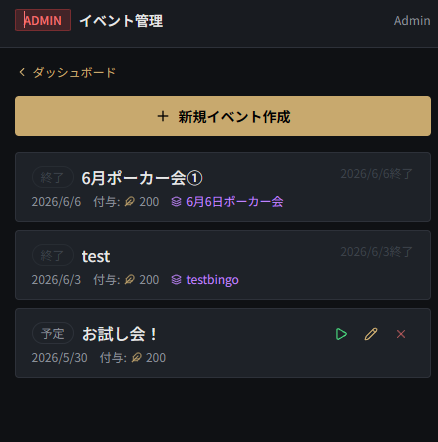
イベント一覧（「開催中」バッジと終了ボタン）
/admin/events
編集・削除
「予定」状態のイベントは ✏️ で編集、✕ で削除できます。開催開始後は編集・削除できないため、内容の修正は開始前に行ってください。
管理 A-4
来店ポイントの付与（QRスキャン）
来店したメンバーの会員証QRをスマホカメラで読み取り、来店ポイントを付与します。
- 来店スキャン を開き、イベント選択で今日のイベントを選ぶ
プルダウンにはイベント名と付与ポイント数が表示されます。イベント未作成の場合は先にA-3へ。
- カメラでQRスキャン開始 を押す（初回はカメラ許可のダイアログが出るので許可する）
- メンバーに会員証画面（M-3参照）を出してもらい、QRを枠内に合わせる
- 読み取りに成功すると「✓ ○○ に 200pt 付与しました」と表示され、スキャンが自動停止する
同時に「今日のラッキーハンド」が配布され、イベントにビンゴカードを設定していればビンゴカードも自動配布されます。
- 次の人を読む場合は再度スキャン開始を押す
図 5
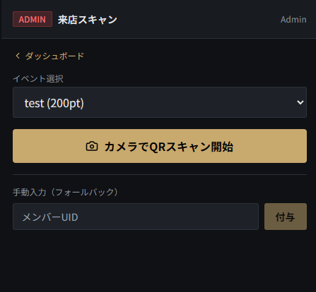
来店スキャン画面
/admin/scan
二重付与について
同じイベントで同じメンバーを2回スキャンしても、二重付与は自動的にブロックされます。
QRが読めないとき（手動入力）
画面下部の「手動入力（フォールバック）」にメンバーのUIDを入力して 付与 でも同じ処理ができます。UIDはメンバー管理画面の名前の下に先頭8桁が表示されています（入力には完全なUIDが必要なので、Firebase Consoleか本人の会員証番号から確認してください）。
管理 A-5
マッチの作成〜開始〜精算
マッチには2種類あります。順位を競って褒章を配るトーナメントと、チップの出入りをポイントで精算するプレミアリングです。
| 🏆 トーナメント | ♠ プレミアリング |
|---|
| エントリー費の既定 | 0 🪶 | 100 🪶 |
| 精算方法 | 順位を入力 → 順位別の褒章ポイント＋特典を自動付与 | 参加者ごとのキャッシュバック額を入力して返還 |
| 追加エントリー | リエントリー（任意設定） | リバイ（任意設定） |
| 結果発表 | 参加者のホーム画面に表彰演出が表示される | — |
マッチを作成する
- マッチ管理 → ＋ 新規マッチ作成
- カテゴリ（🏆 トーナメント ／ ♠ プレミアリング）を選ぶ
- 共通項目を入力する
タイトル／エントリー費（🪶）／定員／開催日時
- イベント紐付けで今日のイベントを選ぶ
開催中のイベントだけが選べます。単発開催なら「紐付けなし（野良マッチ）」でもOK。
- 【トーナメントのみ】順位別褒章を設定する
1位〜3位が初期表示。各順位のポイントを入力し、＋ 順位追加 で増やせます。特典アイテム（ショップで登録したもの）を副賞として付けることも可能。必要なら「リエントリー可」にチェックし、費用を設定（空欄ならエントリー費と同額）。
- 【リングのみ】必要なら「リバイ可」にチェックし、リバイ費を設定
- マッチを作成。一覧に 受付中 で追加され、メンバーがエントリーできるようになる
図 6
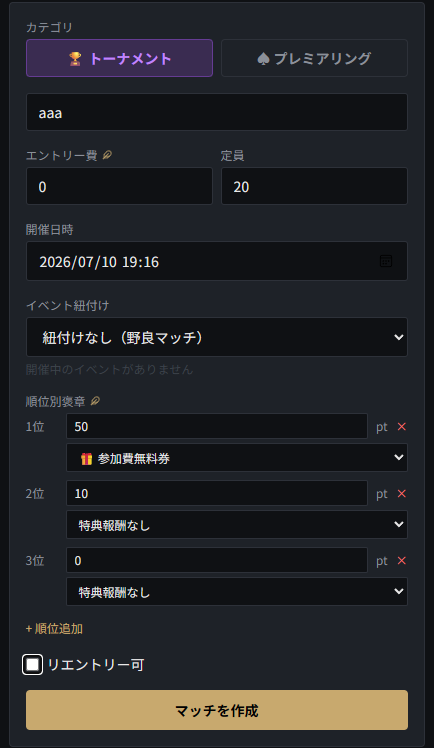
マッチ作成フォーム
/admin/matches
エントリーの通知
エントリーが3人に達すると管理者に通知が届きます。メンバーのエントリー費はエントリー時点でポイントから支払われ、受付中の間は本人がキャンセル（返金）できます。
マッチを開始する
- 参加者が揃ったらマッチカードの 開始する を押す。ステータスが 開催中 になる
開催中になるとリバイ／リエントリーの受付が始まり、削除はできなくなります。
タイマーアプリ連携（任意）
各マッチカードの下部に「タイマーアプリ」欄があります。
- セッション作成 ↗ — 連携タイマーアプリ（timer-black-swan.web.app）にマッチIDを引き継いでセッションを作成。作成後はカードに タイマー管理 ↗ と進行状況（レベル・残り人数）が表示される
- 外部URL — 他のタイマーアプリを使う場合、URLを貼り付けて保存。メンバーのマッチ詳細にもリンクが表示される
精算する（トーナメント）
- ゲーム終了後、終了・精算（順位） を押す
- 参加者ごとの順位を入力する
タイマーセッションと連携していれば暫定順位が自動で入ります。必ず確認・修正してください。
- 精算実行。順位に応じた褒章ポイント・特典が自動付与され、参加者のホームに結果が発表される
精算する（プレミアリング）
- 終了・精算（キャッシュバック） を押す
- 参加者ごとに返すポイント額（最終チップ相当）を入力する
初期値はエントリー費と同額。右側に±差分、下部に合計支払とプール額（エントリー＋リバイの総額）が表示されるので、合計がプールと合っているか確認してください。
- 精算実行
図 7
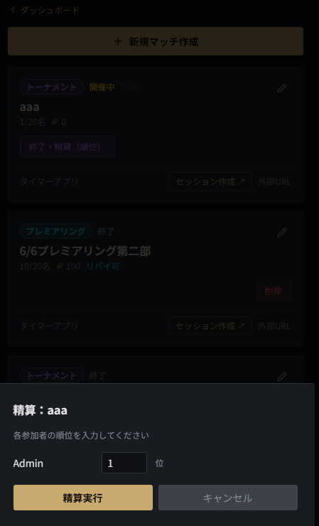
トーナメント精算モーダル（順位入力）
/admin/matches（精算モーダル）
図 8
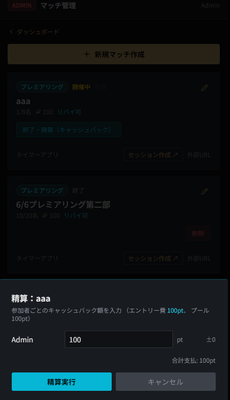
リング精算モーダル（キャッシュバック入力・プール表示）
/admin/matches（精算モーダル）
精算は取り消せません
精算実行でポイントが即時に動きます。順位・金額をよく確認してから実行してください。誤って精算した場合は「ポイント調整」（A-6）で個別に補正し、理由を必ず記録します。
旧「トーナメント結果入力」画面について
/admin/tournament に大会名と順位・ポイントを一括登録する旧画面が残っています（ダッシュボードのメニューには表示されません）。エントリー管理が不要な外部大会の結果だけ反映したい場合に使えますが、通常はマッチ管理での精算を使ってください。
管理 A-6
ポイントの手動調整・年間リセット
誤付与の訂正やイレギュラー対応のための機能です。すべての操作に理由の記録が必須です。
手動でポイントを加減算する
- ポイント調整 を開き、対象メンバーを選ぶ
選ぶと保有・累計・年間の現在値が表示されます。
- 操作（加算／減算）と対象を選ぶ
「保有+累積」= 両方を変更（通常はこれ）／「保有のみ」= 残高だけ変更しランキングに影響させない／「累積のみ」= ランキングだけ補正し残高は変えない。
- ポイント数と理由（必須。例: 誤付与の訂正）を入力して実行
減算時は残高チェックが働き、不足していればエラーになります。
図 9
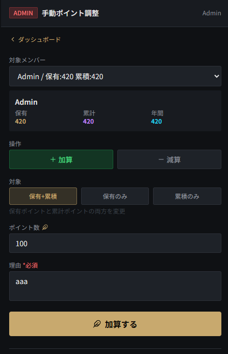
ポイント調整フォーム（3種の残高表示）
/admin/points
年間ランキングの確定・リセット（年1回）
- 同じ画面の下部「年間ランキング確定・リセット」で対象年度を確認する
- ◯◯年のランキングを確定してリセット → 確認ダイアログで 実行する
①その年のランキングスナップショットを保存 ②年間1位に「年間王者」実績を付与 ③全メンバーの年間ポイントを0にリセット、が実行されます。
年間リセットは取り消せません
年度の切り替わりに1回だけ実行してください。実行後に年間1位と対象人数が画面に表示されます。
管理 A-7
ショップ管理と特典の消し込み
メンバーがポイントで買えるアイテムを登録し、特典（クーポン）の利用を店頭で消し込みます。
アイテムの種類
| カテゴリ | 種別 | 内容 |
|---|
装飾品
（アプリ内の見た目） | アイコン(背景) | アバターの背景色。カラーピッカーで色を指定 |
| アイコン(装飾) | フレーム（gold / flame / metallic 等）またはオーバーレイ（hat / sunglasses / crown 等） |
| アイコン(イラスト) | 黒鳥アイコンのイラスト差し替え |
| ポイントアイコン | 🪶の代わりに表示されるアイコン（feather / chips） |
| 称号 | 名前の下に表示される称号。レアリティ4段階（COMMON / RARE / ELITE / PRIME） |
| ハンド称号 | 購入時に好きなハンドを入力できるコレクション称号（複数購入可） |
| 特典 | — | ドリンク無料券などの現物特典。購入するとクーポンコードが発行される |
アイテムを登録する
- ショップ管理 の「アイテム」タブ → ＋ アイテム追加
- 名前・カテゴリ・コスト（🪶）・説明を入力。商品画像は端末からアップロードできる
- 装飾品の場合は種別を選び、種別ごとの追加設定（色、フレームキー、レアリティ等）を入力する
- 保存。一覧の 👁 ボタンで公開／非公開をいつでも切り替えられる
図 10
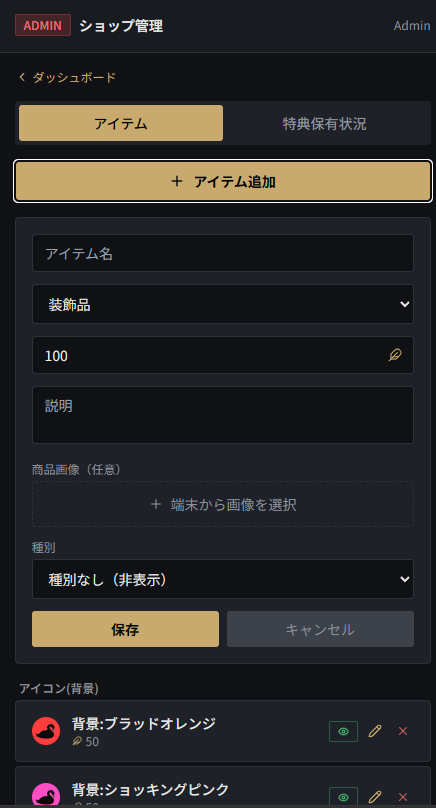
ショップ管理のアイテム追加フォーム
/admin/shop
特典の消し込み（店頭オペレーション）
メンバーが特典を使うときの流れです。
- メンバーがマイページの「所持中の特典」からクーポンコード（例:
AB12-CD34）を提示する
- 管理者はショップ管理の「特典保有状況」タブでコードを検索する
- 該当の特典の 使用済みに を押して消し込む
図 11
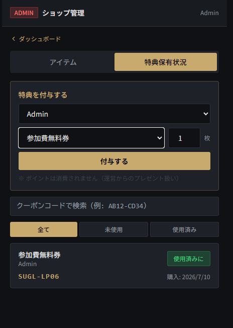
特典保有状況タブ（コード検索と「使用済みに」ボタン）
/admin/shop（特典保有状況タブ）
特典のプレゼント付与
同じタブの「特典を付与する」から、ポイントを消費させずに特典を配れます（景品・お詫びなど運営からのプレゼント用）。メンバー・特典・枚数を選んで 付与する。
管理 A-8
ビンゴ・称号・ハンド履歴
会を盛り上げる付加機能です。
ビンゴカード管理（Ring de BINGO）
- ビンゴカード管理 で「ミッション」タブにお題を登録しておく（例: フロップでセットを引く）
- 「カード」タブで 新規作成。名前・説明と報酬ポイント（1マス達成／1ビンゴ／全達成）を設定する
- 25マスのミッションを入力する。ランダム生成 でテンプレートから自動で埋められる（中央はFREE）
- 作成したカードをイベント作成時（A-3）に「配布するビンゴカード」として選ぶと、来店スキャン時に自動配布される
- 会の最中は
/admin/bingo/stamp（スタンプ画面）で、メンバーを検索またはQRで選び、達成したマスにスタンプを押す
図 12
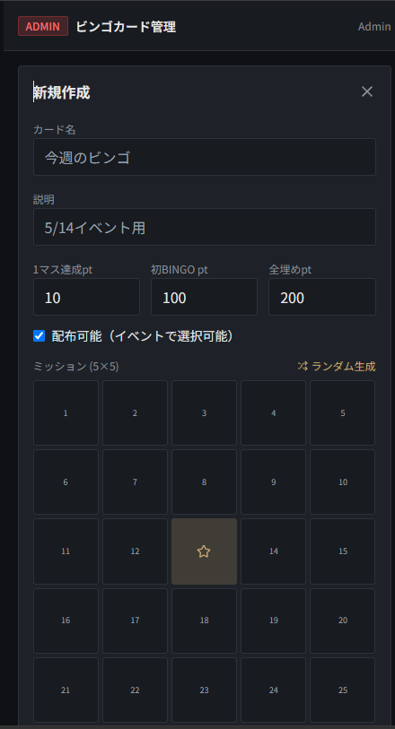
ビンゴカード管理（カード編集画面）
/admin/bingo
称号管理
- 称号管理 で称号テンプレート（称号名・レアリティ・説明）を作成
- 🎁 ボタンからメンバーを選んで付与。メンバーはマイページで装備できる
ハンド履歴インポート
- ハンド履歴インポート に、連携タイマーアプリ等が出力したJSONを貼り付けて取り込む
- 取り込んだハンドはメンバーの「ハンド履歴」画面（
/hands）で閲覧できる
実績管理
- 実績管理 で実績の確認・運用ができる。来店やマッチの節目で自動解除されるものが中心
PART M
メンバー編
一般メンバー向けの使い方ガイドです。そのまま新メンバーに共有できます。
メンバー M-1
登録から利用開始まで
- アプリのURLを開き、Googleでサインイン
- プロフィールを作成する
プレイヤーネーム（20文字以内・重複不可）／ひとこと（任意）／初心者マーク（ONにすると名前に🔰が表示される）
- 登録する を押すと「承認待ち」画面になる。管理者が承認するまで待つ
- 承認されるとホーム画面が使えるようになる
メンバー M-2
画面の見方（ナビゲーション）
画面下部のナビゲーションから主要な5画面に移動できます。右上のベル🔔は通知センターです。
| タブ | 内容 |
|---|
| ホーム | 保有ポイント・今日のラッキーハンド・直近のマッチ・イベント成績・トーナメント結果発表。会員証やショップへの入り口もここ |
| ランキング | 累計／年間ポイントランキング |
| メンバー | メンバー名鑑。タップで各メンバーのプロフィールを見られる |
| マッチ | 開催予定・開催中のマッチ一覧とエントリー |
| マイページ | プロフィール編集・ポイント履歴・実績・所持特典 |
図 14
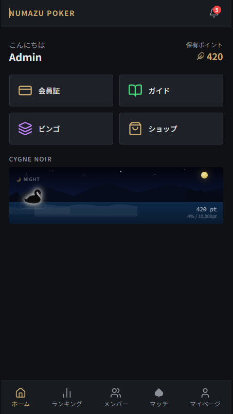
ホーム画面（下部ナビゲーション）
/
ポーカー初心者の方へ
アプリ内の「ガイドブック」（/guide）に役の強さ・ゲーム進行・用語集がまとまっています。ホームから開けます。
メンバー M-3
会員証QRで来店ポイントをもらう
- 来店したらホームから 会員証 を開く
- 表示されたQRコードをスタッフ（管理者）のスキャナーにかざす
- 来店ポイントが付与され、「今日のラッキーハンド」が配布される
その日のビンゴイベントがあればビンゴカードも同時に配られます。付与は1イベントにつき1回です。
図 15
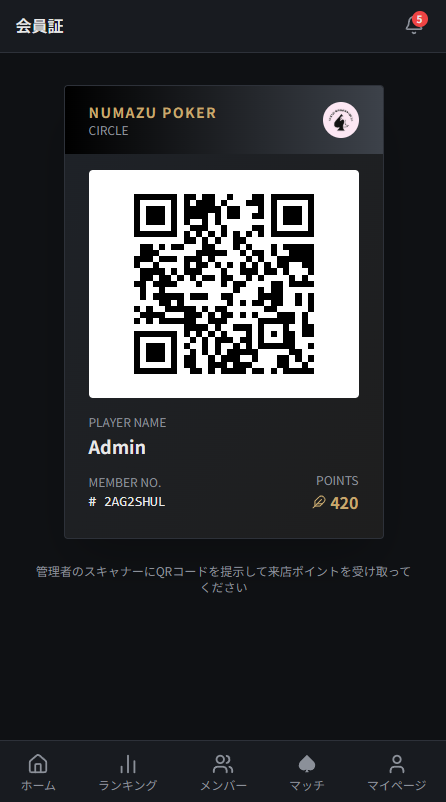
会員証画面（QRコード表示）
/card
メンバー M-4
マッチに参加する
- 「マッチ」タブで参加したいマッチを選ぶ
トーナメント は順位で褒章、プレミアリング は終了時にチップ相当をポイントで精算する形式です。
- 詳細画面でエントリー費・定員・賞金プール・褒章を確認し、エントリー
エントリー費は保有ポイントから支払われます。残高不足だとエントリーできません。
- 都合が悪くなったら、受付中の間はエントリーをキャンセルできる（ポイントは返還）
- マッチ開催中は、設定があれば リエントリー（トーナメント）／リバイ（リング）ボタンが使える
- 終了後、トーナメントは結果がホーム画面で発表される。順位に応じた褒章ポイント・特典は自動で付与される
図 16
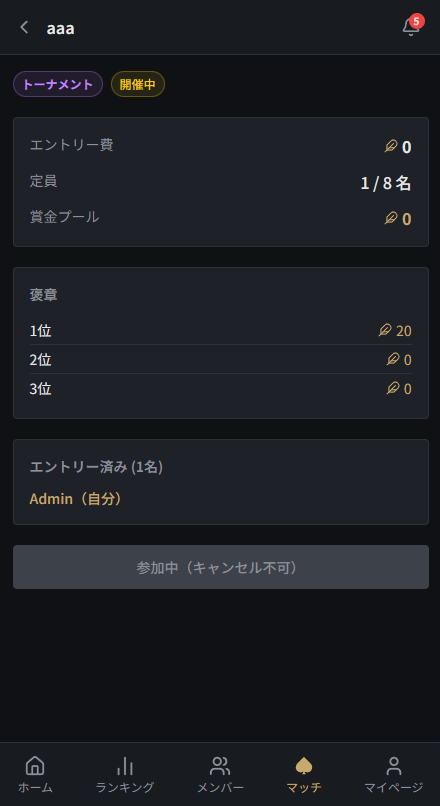
マッチ詳細画面（エントリーボタンと褒章）
/matches/:matchId
図 17
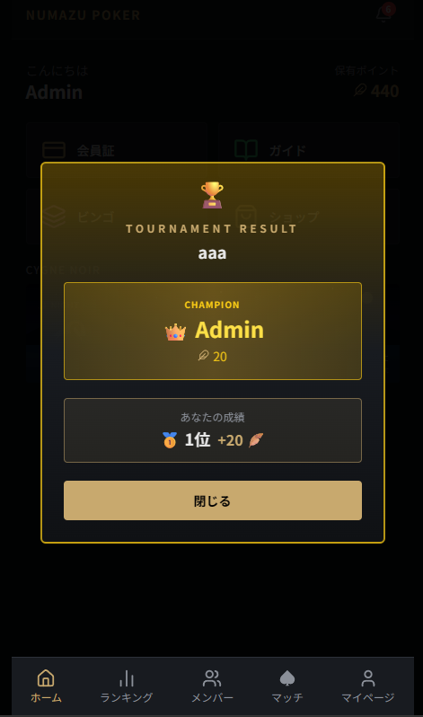
トーナメント結果発表の演出（精算後にホームへ表示）
/（精算直後のホーム）
メンバー M-5
ショップでポイントを使う
装飾アイテム（アプリ内の見た目）
- 「ショップ」の装飾タブで 背景／装飾／アイコン／称号／ハンド称号 を購入できる
- 購入すると自動で装備される。装備の切り替えはマイページ・ショップからいつでも可能
- ハンド称号は購入時に好きなハンド（例: AKs）を入力するコレクションアイテム
特典（クーポン）
- 「特典」タブで欲しい特典と枚数を選んで購入する
- 購入するとクーポンコード（例:
AB12-CD34)が発行され、マイページの「所持中の特典」に入る
- 使うときは店頭でスタッフにコードを提示 → スタッフが使用済み処理をして完了
図 18
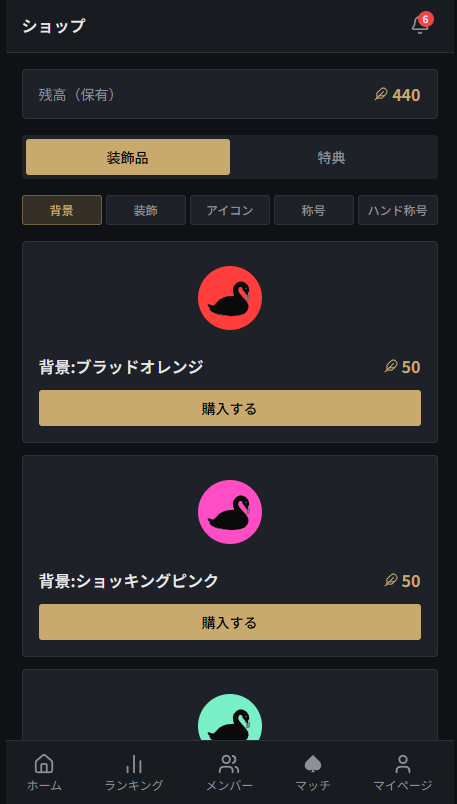
ショップ画面（装飾タブ）
/shop
メンバー M-6
マイページ・ランキング・実績
- マイページ — プレイヤーネーム・ひとことの編集、称号の付け替え、ポイント履歴の確認、所持特典の表示
- ランキング — 累計／年間タブで切り替え。年間は毎年リセットされ、1位には「年間王者」実績が贈られる
- 実績 — 来店回数やマッチ成績などの節目で自動解除されるバッジ。解除の瞬間はカットイン演出が入る。一覧は
/achievements
図 19
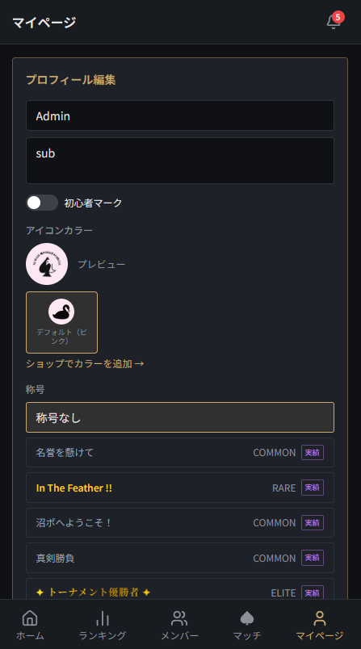
マイページ（ポイント・実績）
/profile
図 20
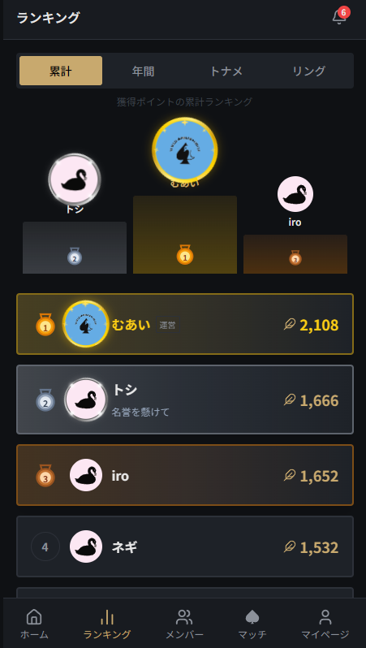
ランキング画面
/ranking
メンバー M-7
ビンゴとその他の機能
Ring de BINGO
- ビンゴイベントの日に来店すると、来店スキャンと同時にビンゴカードが配られる（
/bingo）
- プレイ中にマスのお題を達成したらスタッフに申告。スタッフがスタンプを押してくれる
- マス達成・ビンゴ成立・全マス達成のそれぞれでポイントがもらえる
その他
- ハンド履歴（
/hands）— 対戦のハンド履歴を後から振り返られる（管理者がインポートした分）
- 通知 — マッチの開催・結果・実績解除などが右上のベルに届く
- メンバー名鑑 — 他のメンバーのプロフィール・実績を見られる
図 21
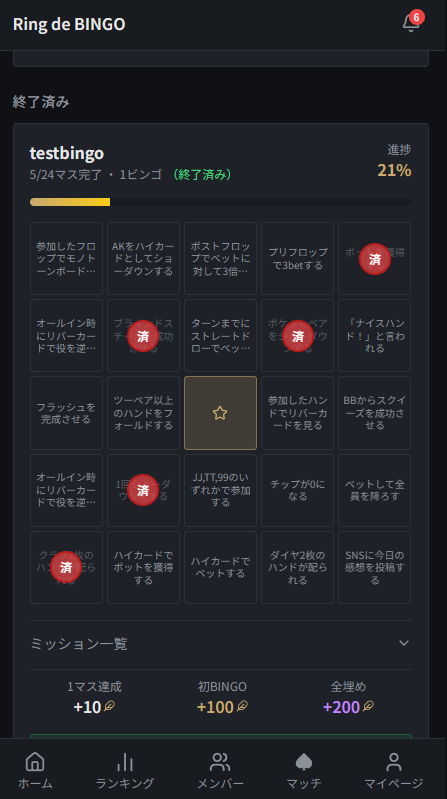
ビンゴカード画面
/bingo
付録
よくある質問
- 登録したのにアプリが使えない
- 管理者の承認待ちです。管理者は「メンバー管理」の承認待ちタブを確認してください（A-2）。
- マッチ作成時に「イベント紐付け」の選択肢が空
- イベントが「開催中」になっていません。イベント管理で ▶ 開催開始を押してから作成してください（A-3）。
- 来店スキャンでカメラが起動しない
- ブラウザのカメラ許可を確認してください。それでも読めない場合は手動UID入力で付与できます（A-4）。
- 同じ人を2回スキャンしてしまった
- 二重付与は自動でブロックされるので問題ありません。
- エントリーできない（ポイント残高が不足しています）
- 保有ポイントがエントリー費に足りていません。会員証・マイページで残高を確認してください。
- 精算の順位・金額を間違えた
- 精算のやり直しはできません。「ポイント調整」で対象者ごとに加減算し、理由欄に経緯を記録してください（A-6）。
- ポイントを増やしたのにランキングが変わらない／残高が変わらない
- ポイント調整の「対象」設定を確認してください。「保有のみ」はランキングに影響せず、「累積のみ」は残高に影響しません（A-6）。
- 特典を買ったのにどこにあるか分からない（メンバー）
- マイページの「所持中の特典」にクーポンコードが入っています。店頭でスタッフに見せてください（M-5）。